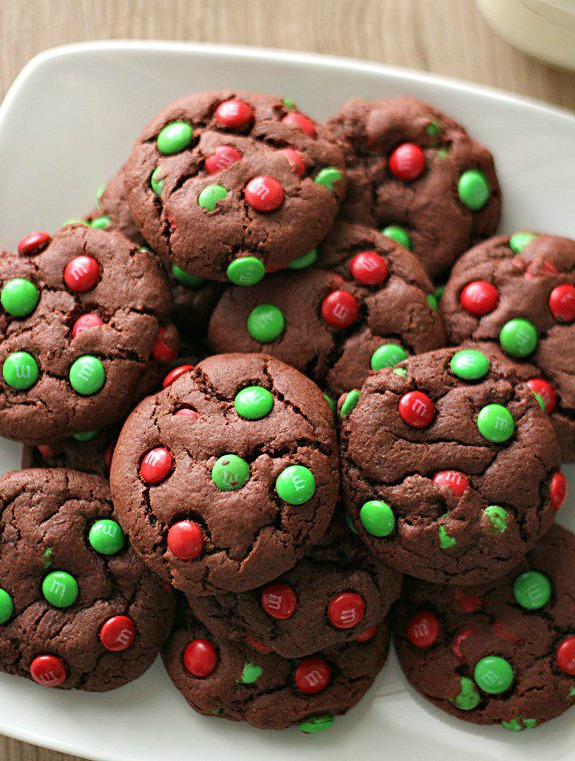

"Recipe 2: Big Soft Ginger Cookies"

Description
These are just what they say: big, soft, gingerbread cookies. They stay soft, too. My oldest son's favorite.
Sourced from https://www.allrecipes.com/recipe/17165/big-soft-ginger-cookies/
Ingredients
- 2 ¼ cups all-purpose flour
- 2 teaspoons ground ginger
- 1 teaspoon baking soda
- ¾ teaspoon ground cinnamon
- ½ teaspoon ground cloves
- ¼ teaspoon salt
- ¾ cup margarine, softened
- 1 cup white sugar
- 1 egg
- 1 tablespoon water
- ¼ cup molasses
- 2 tablespoons white sugar
Steps
- Preheat oven to 350 degrees F (175 degrees C). Sift together the flour, ginger, baking soda, cinnamon, cloves, and salt. Set aside.
- In a large bowl, cream together the margarine and 1 cup sugar until light and fluffy. Beat in the egg, then stir in the water and molasses. Gradually stir the sifted ingredients into the molasses mixture. Shape dough into walnut sized balls, and roll them in the remaining 2 tablespoons of sugar. Place the cookies 2 inches apart onto an ungreased cookie sheet, and flatten slightly.
- Bake for 8 to 10 minutes in the preheated oven. Allow cookies to cool on baking sheet for 5 minutes before removing to a wire rack to cool completely. Store in an airtight container.